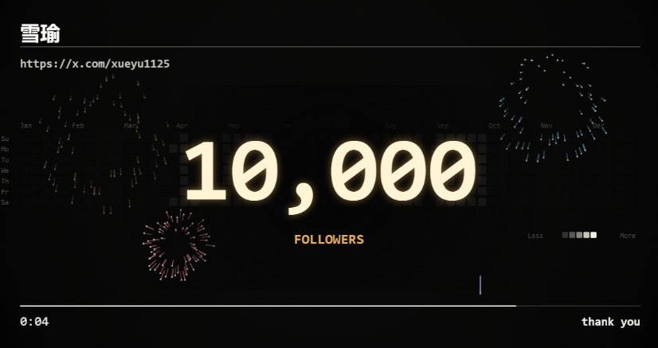

XUEYU / TOOLBOX
小工具，
随手用。
把日常的小想法，做成可以直接使用的工具。
从一个值得庆祝的数字开始。

粉丝庆祝生成器
每一个里程碑，都值得庆祝。让点阵聚合成你的粉丝数，数字亮起，烟花绽放。
- 自定义数字与文案
- 烟花庆祝
- 导出 MP4 / PNG
HDR 头像生成器
保留原始构图，直接制作圆角或圆形头像。调整亮度与背景，下载带 PQ 色彩配置的 HDR PNG。
- 本地抠图与换背景
- 亮区比例检查
- 400 × 400 HDR PNG
下一个工具，正在酝酿
待开发 · 更多好用的小工具会陆续放在这里。